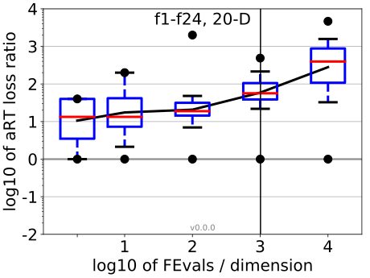
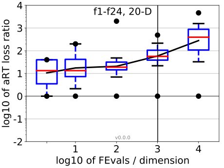

All functions in 5-D and 20-D
f1–f24 in 5-D, maxFE/D=2020
| #FEs/D | best | 10 % | 25 % | med | 75 % | 90 % |
|---|---|---|---|---|---|---|
| RLUS/D | 2e3 | 2e3 | 2e3 | 2e3 | 2e3 | 2e3 |
| 2 | 0.64 | 0.99 | 1.1 | 2.4 | 4.2 | 10 |
| 10 | 1.0 | 1.6 | 3.3 | 4.5 | 6.2 | 11 |
| 100 | 3.1 | 4.8 | 8.4 | 13 | 22 | 88 |
| 1e3 | 3.2 | 7.2 | 9.9 | 20 | 43 | 92 |
| 1e4 | 6.5 | 9.2 | 16 | 41 | 1.5e2 | 2.2e2 |
f1–f24 in 20-D, maxFE/D=1010
| #FEs/D | best | 10 % | 25 % | med | 75 % | 90 % |
|---|---|---|---|---|---|---|
| RLUS/D | 1e3 | 1e3 | 1e3 | 1e3 | 1e3 | 1e3 |
| 2 | 1.0 | 1.0 | 3.4 | 13 | 40 | 40 |
| 10 | 1.0 | 1.0 | 7.2 | 13 | 50 | 2.0e2 |
| 100 | 1.0 | 6.3 | 13 | 19 | 32 | 49 |
| 1e3 | 1.0 | 21 | 38 | 56 | 1.1e2 | 2.4e2 |
| 1e4 | 1.0 | 29 | 96 | 4.0e2 | 8.9e2 | 1.6e3 |
Separable functions in 5-D and 20-D
Misc. moderate functions in 5-D and 20-D
Ill-conditioned functions in 5-D and 20-D
Multi-modal functions in 5-D and 20-D
Weak structure functions in 5-D and 20-D
aRT loss ratios (see the previous figure for details). Each cross (+) represents a single function, the line is the geometric mean.{kind=link}
{kind=link}
{kind=link}
{kind=link}
{kind=link}
{kind=link}
{kind=link}
{kind=link}
{kind=link}
{kind=link}
{kind=link}